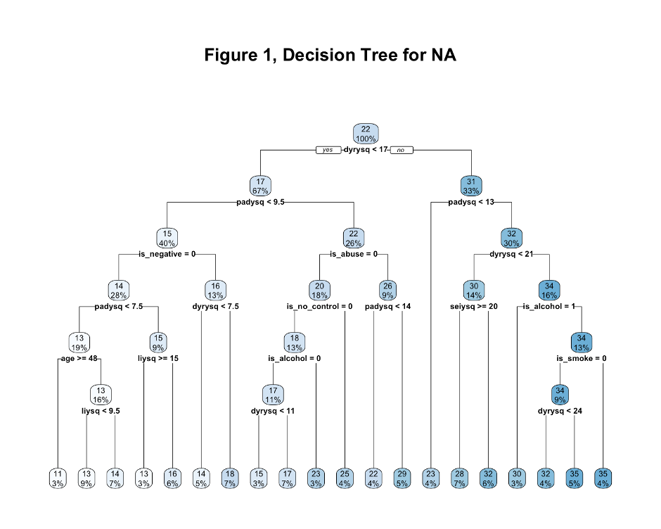
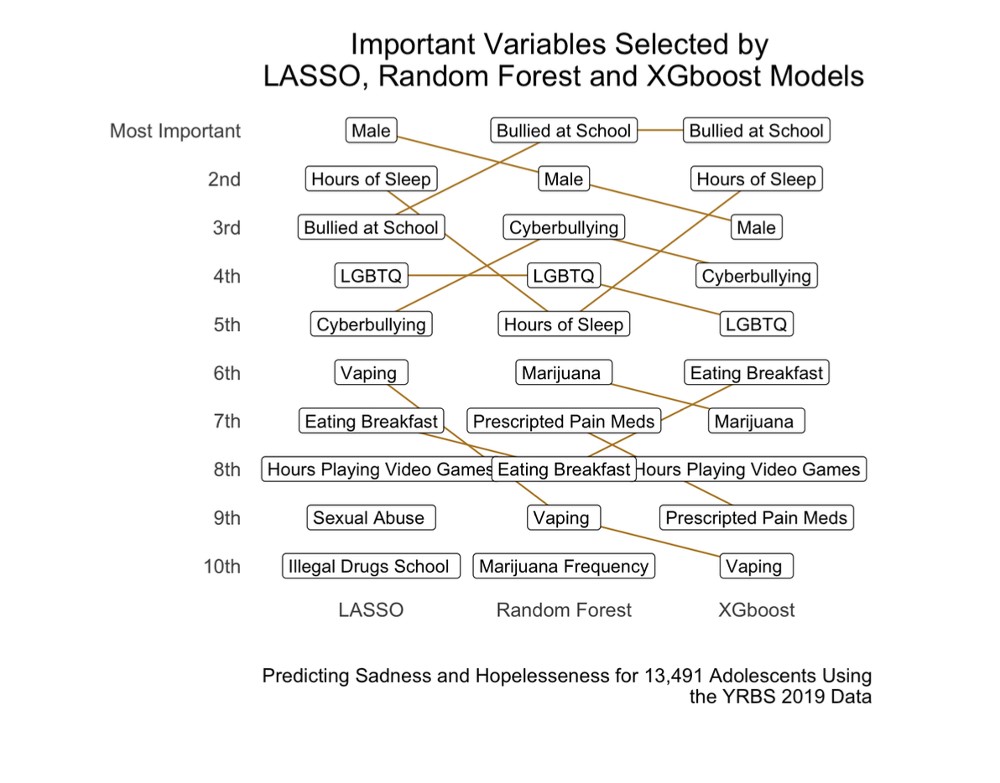
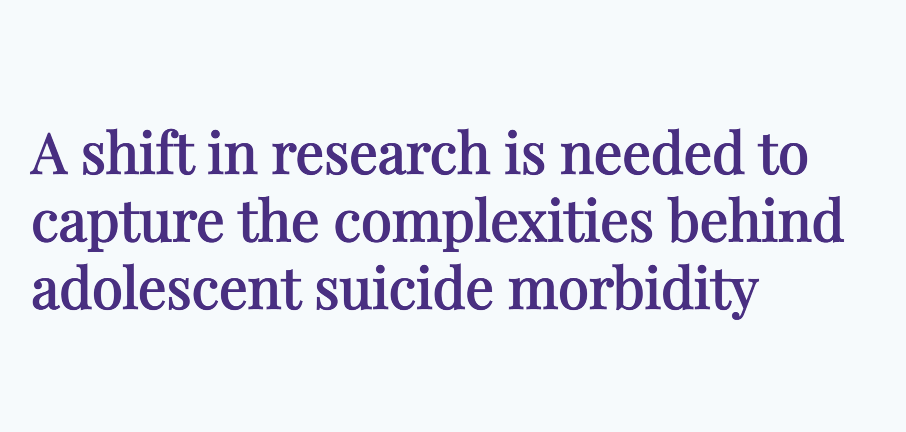
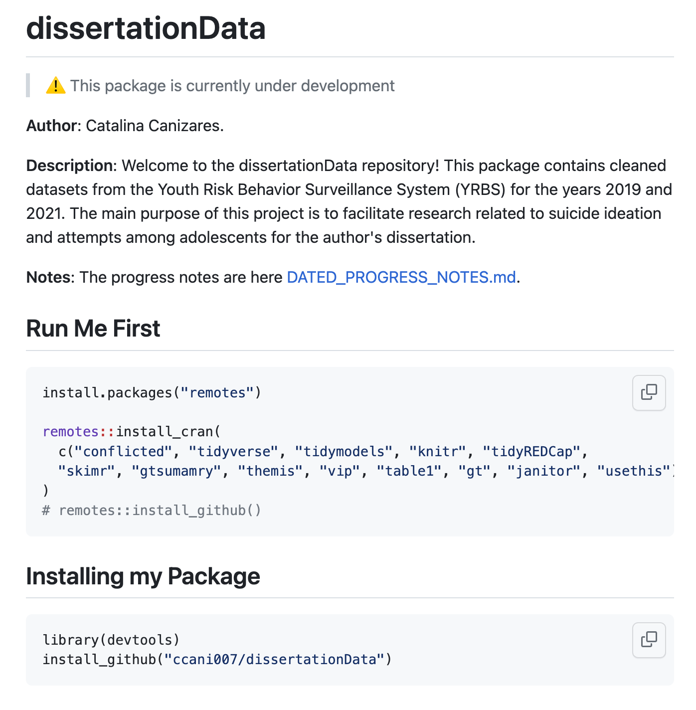
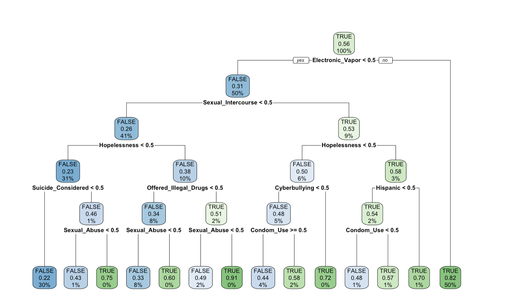
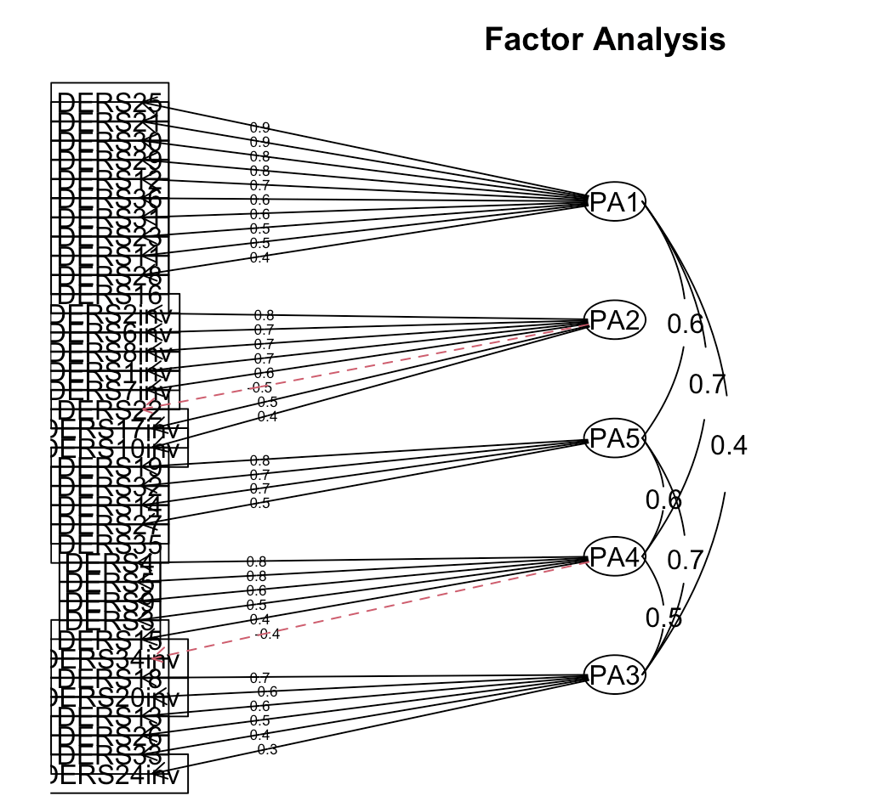
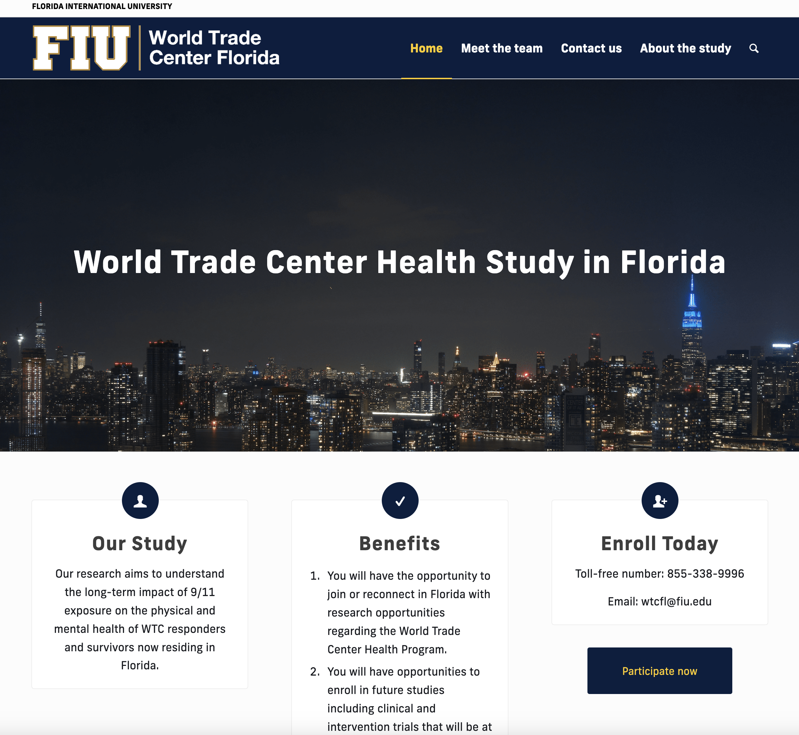
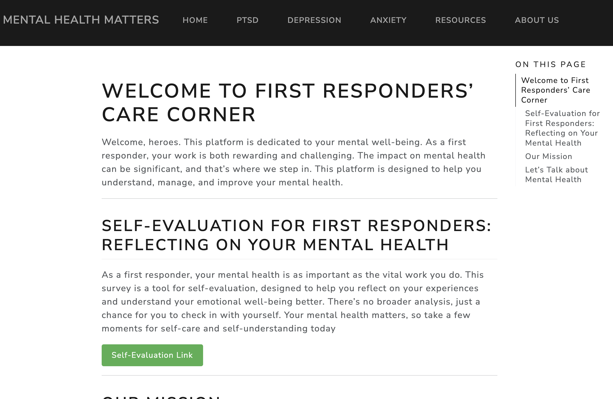

Current Projects
Understanding Negative Affect in Adults
I’m waiting for BMC psychology to review our work in a publication that aims to examine the extent to which cognitive schemas, attributional style, experiences of child adversity, and lifestyle factors such as alcohol, drug use, and physical activity are risk factors can accurately predict Negative Affect in a sample of both depressed and non-depressed adults in Colombia 🇨🇴 using regression trees. Take a look here

Persistent Sadness and Hopelessness in Youth: A Supervised Machine Learning Classification Approach to Identify Risk Factors

Feelings of hopelessness in adolescents have been consistently linked to mental health outcomes such as depression and suicidality, including suicide ideation and attempts. In recognition of its importance, hopelessness has been added to the DSM and is considered within risk-factor guidelines and integrated into structured suicide-risk assessments. Despite this, research exploring risk factors that increase the likelihood of adolescents feeling hopeless is scarce and hopelessness has acquired secondary consideration in literature. Therefore I am working in a publication that aims to address this gap by investigating the effect of intra and interpersonal risk and protective factors on adolescent hopelessness. Check out the poster 
Dissertation - Comparing Supervised Machine Learning Classification Methods to Identify Risk Factors for Suicide Morbidity Among USA High School Students
As of December 2022, my research proposal on adolescent suicide morbidity has been approved, and I am currently focused on building the code to analyze the data.
You can view the slides to my research proposal by clicking here! 👀

dissertationData: An Accessible R Package for Exploring 2019 and 2021 YRBS Data

My dissertation is built upon data gathered from the 2019 and 2021 Youth Risk Behavior Surveys (YRBS). To simplify access to this data, I’ve created an R package that is available for public use. This package provides a user-friendly way for others to explore and utilize the valuable information collected from these surveys. Check out the repository
Understanding Adolescent Alcohol Consumption: A Decision Tree Analysis Using the YRBSS 2019 Data
As part of my ongoing passion to help prevent adolescents from engaging in self-harm and promote their success as adults, I am currently involved in a project aimed at understanding the risk factors associated with drinking behaviors. Although this project is in its early stages, our team has already developed a decision tree to identify the primary risk factors that contribute to alcohol consumption among US adolescents. These risk factors include using vaping products, engaging in risky sexual behaviors, using drugs, and others.

Exploring Gratitude in Children: Evaluating an Instrument to Measure Factors and Impact on Well-Being

As my research primarily focuses on negative emotions such as depression, hopelessness, negative affect, and suicide, I strive to maintain a balanced approach by exploring positive emotions as well. Currently, I am conducting a project that delves into gratitude in children, which has been found to be a significant factor in fostering resilience and building positive social relationships.
Our project aims to evaluate an instrument that measures gratitude in children. To gather empirical evidence about its underlying factors, we are performing both confirmatory and exploratory factor analyses on a sample of 503 children from Colombia 🇨🇴. By doing so, we aim to gain a comprehensive understanding of the factors that contribute to gratitude in children and its potential impact on their overall well-being.
World Trade Center Health Study in Florida
I currently serve as the research coordinator for a pilot study investigating the physical and mental health of first responders and survivors of the 9/11 attacks residing in Florida. Our team is currently in the first phase of the project, where we are working to collect as much data as possible.
In my role, I have focused on coordination and strategic planning, and have contributed several ideas to the project. One of these ideas was to develop a website that could provide comprehensive information to potential participants and present a welcoming and aesthetically pleasing interface. To achieve this goal, I collaborated with two colleagues from FIU to design and develop a beautiful website. I invite you to visit the website and explore its content.

First Responders Care Corner

I hold a deep passion for the wellbeing and mental health of disaster first responders. My research journey is driven by the goal of equipping these invaluable individuals with resources that guide them to a wealth of information and relevant referrals. In collaboration with Professor Mark Macgowan, we have come together to establish a comprehensive website. This platform is meticulously designed to serve as a valuable space for disaster first responders, offering a hub of essential information and connections to appropriate resources. I invite you to take a closer look at our efforts by visiting the website: Mental Health Matters for First Responders.